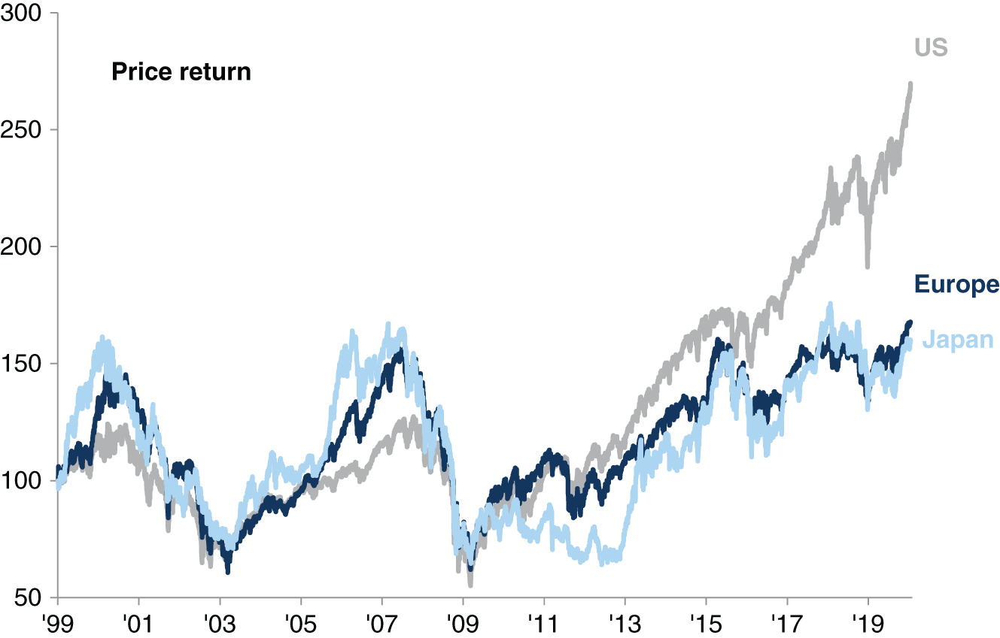
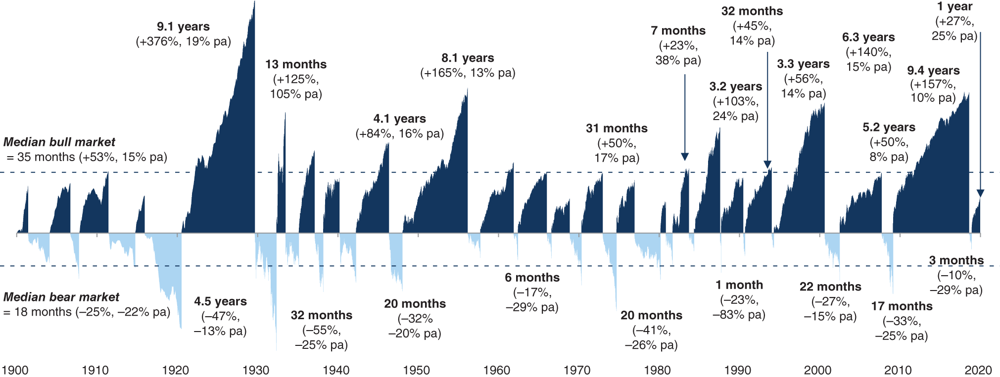
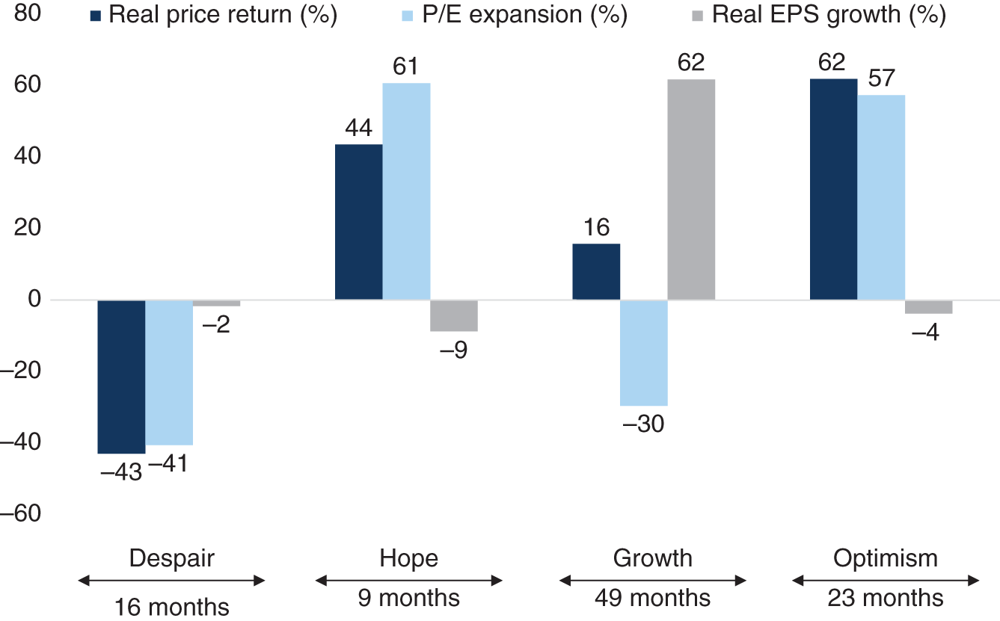
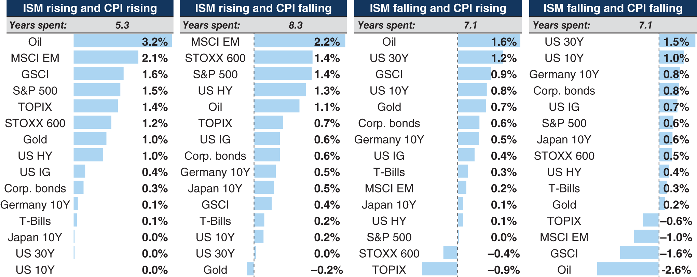
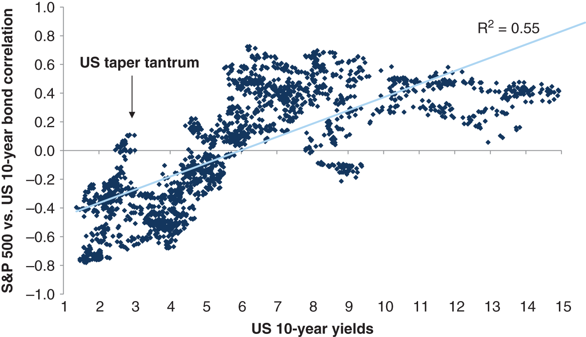
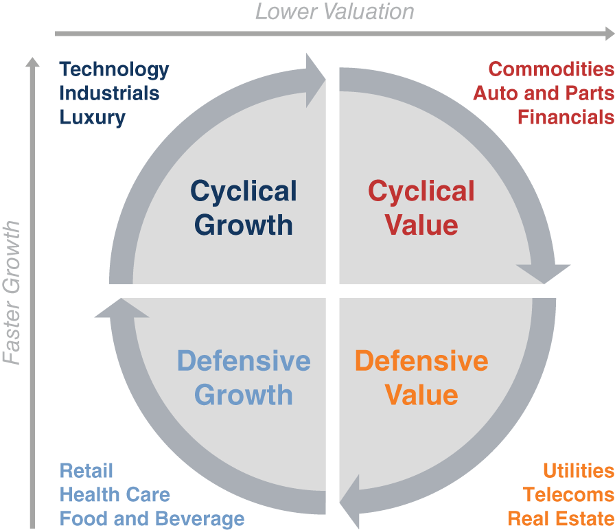
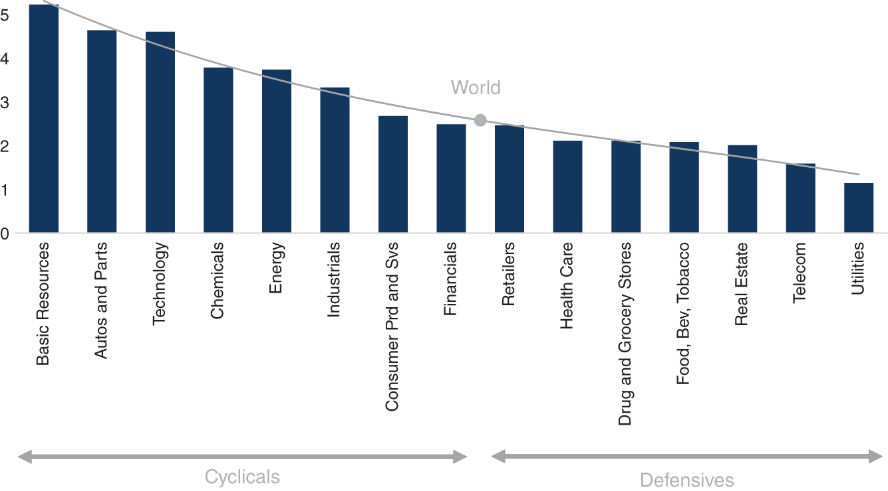
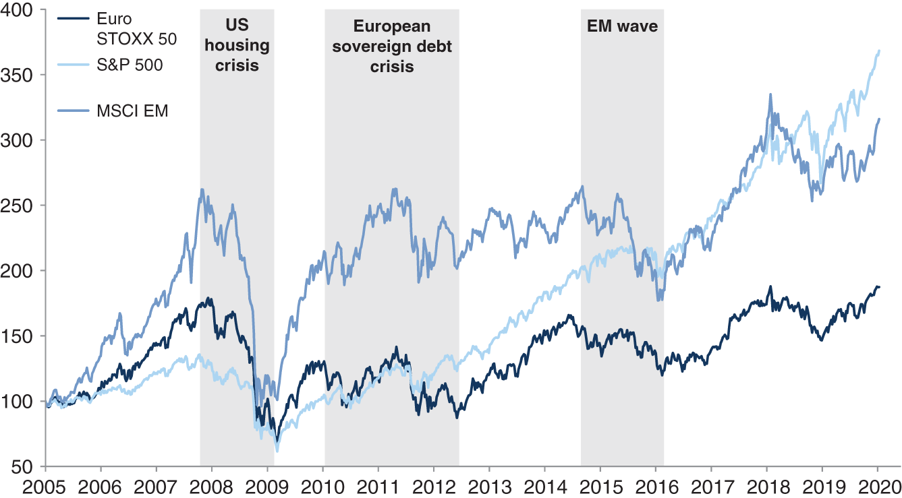

By Peter C. Oppenheimer · 2020 · 316 pages
Equity Risk Premium (ERP): The excess return investors earn (or require) from equities over risk-free government bonds. Historically averaged about 6% ex post in the US, though Fama and French estimated the expected premium at roughly 3%.
CAPE (Shiller P/E): Cyclically adjusted price-to-earnings ratio using ten years of trailing real earnings. Has an R-squared of 0.70 with subsequent ten-year equity returns.
Despair Phase: The bear market portion of the equity cycle, when prices fall sharply driven by P/E contraction as investors anticipate recession.
Hope Phase: The short rebound from the trough, driven entirely by P/E expansion while earnings are still falling. Delivers the highest annualised returns of any phase.
Growth Phase: The longest phase where actual earnings growth materialises but stock returns are modest because investors already paid forward during hope.
Optimism Phase: The final phase where valuations outstrip earnings and investor complacency sets up the next correction.
Cyclical Bear Market: Triggered by rising interest rates and recession. Average decline of 31% over 27 months. Markets respond to rate cuts and typically recover within four years.
Event-Driven Bear Market: Caused by an exogenous shock such as a war or oil crisis. Average decline of 29% but only nine months in duration, recovering within about fifteen months.
Structural Bear Market: Caused by the unwinding of major financial imbalances and bubbles. Average decline of 57% over 42 months, taking roughly a decade to recover. Rate cuts are largely ineffective.
Gordon Growth Model (DDM): Dividend yield plus growth equals the risk-free rate plus the equity risk premium. The foundational equation linking equity valuations to interest rates and growth expectations.
Duration (Equity): The length of time until investors receive expected cash flows. Technology stocks are long-duration assets; utilities are short-duration. Long-duration stocks are more sensitive to interest rate changes.
Reverse Yield Gap: The phenomenon where dividend yields fall below government bond yields, reflecting investor willingness to accept lower current income for expected capital growth. Persisted from the late 1950s until the tech bubble collapse.
Second Derivative: The rate of change of the rate of change. In market context, when economic data stops deteriorating at an accelerating pace, that inflection point often marks the best time to buy equities.
ISM / PMI: Manufacturing survey indices calibrated around 50, where above 50 signals expansion and below 50 signals contraction. Monthly frequency makes them more useful than quarterly GDP for tracking mini cycles.
When Peter Oppenheimer started as a graduate trainee at Greenwells & Co in 1985, the City of London still operated like something from a previous century. Government Gilt brokers wore top hats on the trading floor. The first women had been elected to the London Stock Exchange just twelve years earlier. A classmate was jeered and sent home for the unforgivable sin of wearing brown shoes. Junior clerks called “blue buttons” physically walked the floor to collect price quotes from “jobbers” — market-makers who scrawled figures on paper that were then carried to a board in the back office.
The research department’s idea of cutting-edge technology was a mobile telephone the size of a shoebox. Before that innovation, junior analysts had to physically walk to the Bank of England on Threadneedle Street to collect data releases, then sprint to a bank of telephone boxes outside the stock exchange to relay the numbers back to the office. The senior economist would interpret them, hand-write a comment, and have it photocopied for the sales team. Within fifteen years, trade execution times would shrink from seconds to millionths of a second, and the entire infrastructure Oppenheimer first encountered would be unrecognisable.
The world beyond the trading floor was transforming just as rapidly. The Big Bang deregulation of 1986 replaced face-to-face transactions with computers and telephones, blowing apart barriers to entry that had protected City incumbents for generations. Microsoft released Windows 1.0 and the first commercial domain name, symbolics.com, was registered. IBM launched its first laptop, Intel released the 386 processor, and IMAP made email retrieval practical for the first time. British scientists discovered a hole in the ozone layer, triggering the Montreal Protocol — the first international environmental treaty to achieve universal ratification.
“What we may be witnessing is not just the end of the Cold War, or the passing of a particular period of postwar history, but the end of history as such.” — Francis Fukuyama, 1989
The political landscape was equally seismic. Margaret Thatcher and Ronald Reagan drove supply-side reforms while the UK miners’ strike ended with the closure of most of the nation’s coal mines. In Moscow, Mikhail Gorbachev introduced Glasnost and Perestroika, unwittingly setting in motion the collapse of the Soviet Union. China’s first special economic zone had opened in Shenzhen in 1980, and by 1990 stock markets were operating in both Shenzhen and Shanghai. Francis Fukuyama captured the triumphant mood with his essay “The End of History,” arguing that Western liberal democracy had achieved final victory. It seemed to capture the zeitgeist perfectly.
Against this backdrop of optimism, the Dow Jones rallied 27% in 1985, its strongest year since the recovery from the oil crisis of 1973-74. The euphoria continued into 1987, with the Dow appreciating an astonishing 44% in the first ten months of the year. Then, on 18 October 1987, everything changed. The Dow collapsed 22.6% in a single day — an event christened Black Monday in reference to the crashes of 1929 that had occurred almost exactly 58 years earlier. Despite all the changes of the intervening decades, panic felt exactly the same. The Federal Reserve under Alan Greenspan responded immediately, affirming the Fed’s readiness to provide liquidity and cutting the funds rate from 7.5% to 7% the following day. It worked. The recovery from the 1987 crash took less than two years, compared to twenty-five years after 1929.
The crises kept coming. In 1992 sterling collapsed out of the Exchange Rate Mechanism on Black Wednesday. Oppenheimer had just taken out a mortgage on his first flat with a floating rate — along with many of his friends, he was terrified as the Bank of England ratcheted rates from 10% to 12% and then to 15% in a single day. Twenty years later, Mario Draghi would demonstrate that central bankers had learned from these episodes when he declared that the ECB was “ready to do whatever it takes to preserve the euro. And, believe me, it will be enough.”
The difficulty of forecasting runs through the chapter like a drumbeat. An IMF study found that of more than sixty recessions between 2008 and 2009, not a single one had been predicted by the consensus of professional economists. Prakash Loungani summarised the profession’s track record with deadpan precision: “The record of failure to predict recessions is virtually unblemished.” When the Queen visited the London School of Economics in November 2008 and famously asked why nobody had seen the crisis coming, the British Academy’s eventual response pointed to “a failure of the collective imagination of many bright people… to understand the risks to the system as a whole.”
“Men think in herds; it has been seen that they go mad in herds, while they only recover their senses slowly, one by one.” — Charles Mackay, Extraordinary Popular Delusions, 1841
Oppenheimer draws on Kahneman and Tversky’s prospect theory to explain why: investors make decisions based on expected gains or losses from their current position, and most will choose to protect existing wealth rather than risk it for equivalent gains. But this loss aversion evaporates in extreme bull markets, when the fear of missing out overwhelms rational caution. George Soros’s concept of reflexivity adds another layer: a falling stock market can itself destroy business confidence and deepen a recession, creating feedback loops that have no equivalent in the physical sciences where forecasting the weather does not change the storm.
The foundation of the entire book rests on a simple but powerful observation: since 1860, US equities have averaged roughly 10% total annual returns across holding periods from one year to twenty years. US ten-year government bonds have averaged 5–6% over the same periods. The reward for bearing equity risk has been substantial and remarkably consistent. Jeremy Siegel documented this in Stocks for the Long Run, finding that real equity returns were 7.0% per year from 1802 through 1870, 6.6% from 1871 through 1925, and 7.2% per year since 1926 — a stability across radically different economic regimes that borders on the eerie.
The catch is volatility. Over one-year holding periods, equity returns have a standard deviation roughly three times that of bonds — 10% versus 3%. Equities have delivered negative returns 28% of the time over single years, compared to 18% for bonds. But extend the horizon and the picture transforms: over five-year periods, equities are negative only 11% of the time versus just 1% for bonds. Over ten years, equities are negative only 3% of the time. And over twenty-year periods, neither equities nor bonds have ever produced a negative return in the entire 160-year dataset. For investors who can absorb short-term mark-to-market losses and hold for at least five years, equities offer roughly twice the return of bonds with about twice the risk — the essence of the “long good buy.”
But averages conceal enormous variation across cycles. Equities purchased at the start of either World War, at the peak of the late-1960s bull market before the inflation spike, or at the top of the technology bubble in 2000 delivered some of the lowest real returns in over a century. Conversely, equities purchased during the 1920s boom, the post-war reconstruction of the 1950s, or after the large bear markets of the 1980s and 1990s delivered some of the highest. The bond market since the 1980s has been truly remarkable: US Treasuries bought at the peak of the inflation cycle delivered annualised real returns exceeding 10% for a decade. An investor who put $1,000 into government bonds in 1980 would have seen it grow to roughly $6,000 in real terms by the time Oppenheimer was writing.
“Economics and markets have never moved in a straight line in the past, and neither will they do so in the future. And that means investors with the ability to understand cycles will find opportunities for profit.” — Howard Marks, Mastering the Market Cycle
The equity risk premium puzzle, identified by Mehra and Prescott in 1985, haunts the data. Between 1889 and 1978, the average real return on stocks was approximately 7% per year while government bonds returned just under 1%, yielding an ERP of over 6% — far too large to explain through standard models of risk aversion. Subsequent research by Bernstein and by Fama and French showed that because valuations had expanded over the sample period (P/E ratios rising from about 10x to about 20x), the ex post premium overstated the true expected premium, which they estimated at roughly 3%. Robert Shiller’s CAPE ratio, introduced in Irrational Exuberance, provides the clearest link between current valuations and future returns: the R-squared between CAPE and subsequent ten-year returns is 0.70 — an extraordinarily strong relationship for financial data.
The power of dividends is easily underestimated. Since the early 1970s, roughly 75% of the S&P 500’s total return can be attributed to reinvested dividends and compounding. Between 1880 and 1980, the US dividend payout ratio averaged 78% of earnings with a resulting yield of 4.8%. Share buybacks, only explicitly permitted since the SEC’s Rule 10b-18 in 1982, have since partially substituted for dividends: since 2000, the average dividend yield has been 1.9% and the buyback yield 2.0%. Combined, this 4% annual cash return means an investor could double her money in under eighteen years without any price appreciation at all. In Europe, where indices are heavy with mature industries like oil, banks, and telecoms, dividends account for roughly 80% of twenty-year rolling returns.

Exhibit 2.7: Price return only (excluding dividends) for the US, Europe, and Japan, rebased to 100 in 1999. Through 2020, the US reached ~270, while Europe and Japan both languished around 165. This is the dividend argument made visible: if you strip out reinvested income, the US looks remarkable, but European investors who took dividends as income would still have compounded returns substantially higher than price alone.
Timing matters, even if perfect timing is impossible. An investor who avoided the single best month each year since 1900 would have earned roughly 2% annually, while one who avoided the single worst month would have earned nearly 18% — close to 80% more than staying fully invested. The practical implication is that avoiding the worst periods, which tend to cluster around recessions and rate-hiking cycles, adds far more value than capturing every last basis point of upside. This is one of the strongest arguments for understanding cycles: not to time the market perfectly, but to recognise when the odds of a major drawdown are elevated and act accordingly.

Exhibit 2.2: Every bull and bear market in US equities since 1900, annotated with duration and cumulative returns. Median bull market: 35 months (+53%, 15% pa). Median bear market: 18 months (−25%, −22% pa). The post-2009 bull lasted 9.4 years (+157%, 10% pa).
This chapter presents Oppenheimer’s central analytical framework: the four phases of the equity cycle. US equity markets have historically moved through complete cycles averaging about eight years from trough to peak, and these cycles can be decomposed into four distinct phases, each driven by different factors and offering different return profiles. The framework is stylised but it maps remarkably well onto actual market behaviour since the early 1970s.
The despair phase is the bear market — the period from peak to trough. It lasts an average of sixteen months and sees prices fall by roughly 43%, driven almost entirely by P/E contraction as investors anticipate a deteriorating macroeconomic environment. Paradoxically, actual earnings are still modestly rising during much of this phase; it is expectations of future earnings that are collapsing, dragging valuations down. Annualised, the losses run at about 45%.
The hope phase is the most important nine months in investing. It delivers the highest returns of the entire cycle — averaging 40–50% price appreciation, annualising at over 60% in the US. Yet it begins when the macroeconomic data is still terrible: unemployment is high, corporate profits are still falling, and newspaper headlines are universally grim. The driver is pure P/E expansion. What triggers the turn is not an improvement in conditions but an improvement in the second derivative — the rate of deterioration starts to slow. Things are still bad, but they are getting less bad at a decelerating pace, and that is enough for animal spirits to revive.
“The best time to buy into the equity market is usually when economic conditions are weak and after the equity market has fallen, but when the first signs start to emerge that economic conditions are no longer deteriorating at a faster pace.” — Peter Oppenheimer
The growth phase is the longest at an average of 49 months. This is when the economic recovery materialises and corporate earnings grow strongly — real EPS increases on average by 62%. But stock returns are modest at just 16% cumulative, because investors have already prepaid for this growth during the hope phase. P/E multiples actually contract by about 30% during the growth phase as earnings catch up to prices that had already anticipated them. This creates a counterintuitive reality: the period of strongest fundamental improvement delivers the weakest stock returns.
The optimism phase averages 23 months and delivers the second-best cumulative returns at 62%. Valuations begin to outstrip earnings growth again — P/E multiples expand by about seven points while real EPS growth is actually slightly negative. Investors become increasingly confident, even complacent. The fear of missing out replaces rational valuation as the dominant force. Volatility picks up toward the end as the sustainability of high returns is tested. This phase sets the stage for the next bear market.
The numbers carry a profound implication for portfolio construction. The hope phase — just nine months out of an eight-year cycle — delivers 36% of total cumulative returns. The optimism phase adds another 51%. The much longer growth phase contributes only 13%. Being invested during the hope phase is the single most important determinant of long-term returns, yet it is precisely when most investors are too scared to buy. This is the central paradox of cyclical investing and the reason that understanding the framework matters so much.

Exhibit 3.2: Real price return, P/E expansion, and real EPS growth across the four phases of the equity cycle (US, since 1973). Hope phase: +44% price return, +61% P/E expansion, −9% EPS. Growth phase: +16% price return, −30% P/E, +62% EPS. The paradox is visible: earnings grow most when returns are lowest, and vice versa.
Oppenheimer traces these patterns through each major cycle since the 1970s. The 1970s structural bear saw the Dow peak in 1972 and not surpass that level until November 1982, with rising inflation crushing P/E ratios by 42–52%. The early 1980s cycle was driven by falling inflation and substantial P/E expansion. The 1990s delivered the “Great Moderation” with solid growth, low inflation, and the combined tailwinds of globalisation, the Soviet collapse, and China’s opening. The 2000–2007 cycle produced the best earnings growth but some of the worst returns, as much of the profit was illusory financial-sector earnings built on leverage. The post-2008 cycle has been the longest on record, driven by QE and ultra-low rates but marked by weak profit growth and extraordinary dispersion between winners and losers.
Within these longer cycles, shorter mini cycles driven by inventory adjustments and policy shifts create their own patterns. The ISM manufacturing index serves as a high-frequency proxy: the best equity returns come when the ISM is below 50 but inflecting upward, mirroring the hope-phase logic. The worst returns come when the ISM is below 50 and still contracting. Three such mini industrial cycles occurred within the post-2009 growth phase without triggering a broader recession.

Exhibit 3.6: Monthly real returns ranked by macro quadrant (ISM rising/falling × CPI rising/falling). When ISM is rising and CPI rising — the reflationary sweet spot — Oil, EM, and commodities lead. When ISM falls and CPI falls — stagflationary risk-off — bonds and the US dollar dominate. Equities perform well in all ISM-rising environments.
Different asset classes respond to the cycle in systematically different ways. In late recessions, defensive assets outperform: gold and long-term bonds benefit from lower policy rates and falling inflation expectations. As the cycle enters early recovery, equities rebound sharply while gold and bonds become the worst performers. Financial assets, which are priced off future expectations, consistently outperform “real” assets, which are driven by current supply and demand balance, during the anticipatory phases of the cycle.
The hope phase is where equities dominate most clearly. In all six cycles since 1973, equities outperformed both bonds and commodities during this phase. In the growth phase, however, commodities tend to lead — outperforming equities and bonds in four of six cycles. This makes intuitive sense: commodities respond to actual demand rather than anticipated demand, so they perform best when the economic recovery has materialised and is driving real consumption. By the optimism phase, equities regain leadership as rising valuations and FOMO carry prices higher.
The relationship between equities and bond yields is more complex than most investors appreciate. The Gordon Growth Model provides the theoretical framework: dividend yield plus growth equals the risk-free rate plus the ERP. When bond yields fall, equity prices should rise — but only if growth expectations remain unchanged. If lower yields reflect lower expected growth, equities may not benefit at all. The correlation between equity and bond prices has shifted dramatically over time: for most of history, the correlation was positive (both rose and fell together), but after the technology bubble burst it turned persistently negative as falling bond yields came to signal recession fears rather than benign disinflation.
Whether rising yields are good or bad for equities depends on five factors: the point in the cycle (earlier is safer), the speed of adjustment (slower is better), the level of yields (above 5% on the US ten-year has historically been definitively negative), the valuation of equities (cheap stocks absorb rate rises more easily), and the driver of the yield move (real or inflation-driven rises are generally easier for equities to digest). Sharp weekly yield moves exceeding twenty basis points have consistently coincided with negative equity returns regardless of context.
George Ross Goobey enters the story as the man who launched the “cult of the equity.” In 1956, as general manager of the Imperial Tobacco pension fund, he gave a famous speech arguing that equities should be the core holding for pension funds seeking inflation-linked returns. He allocated the entire fund to equities, and over the following fifty years the annualised real total return to US equities was 7% — vindicating his conviction. The reverse yield gap he helped create — dividend yields falling below government bond yields — persisted until the tech bubble collapse, when the confidence that had sustained it evaporated.

Exhibit 4.6: Rolling 12-month correlation between the S&P 500 and US 10-year bond returns, plotted against the level of 10-year yields. R² = 0.55. At yields below ~3% the correlation flips negative (bonds rally with stocks). Above ~5%, bonds and stocks are positively correlated — meaning bonds offer no safe-haven protection when yields are high.
Oppenheimer organises sectors into a four-quadrant framework based on two axes: economic sensitivity and valuation. Cyclical growth encompasses technology, industrials, and luxury goods — high sensitivity to the economy and high growth rates. Cyclical value includes commodities, autos, and financials — high sensitivity but lower valuations. Defensive growth covers healthcare, retail, and food and beverage. Defensive value captures utilities, telecoms, and real estate. Each quadrant responds differently to the interplay of growth expectations, inflation, and interest rates.

Exhibit 5.1: The four investment style quadrants mapped to economic conditions. Cyclical Growth (Tech, Industrials, Luxury) leads in early recovery with falling rates. Cyclical Value (Commodities, Autos, Financials) leads when growth accelerates alongside rising inflation. Defensive Growth (Healthcare, Food, Retail) performs in late-cycle slowdowns. Defensive Value (Utilities, Telecoms, Real Estate) dominates bear markets when capital preservation is paramount.
The cyclical-versus-defensive relationship is the most consistent and reliable pattern in style investing. During the despair phase, cyclical companies underperform defensives by roughly 25–30% annualised as investors flee economically sensitive names. During the hope phase, cyclicals outperform by a median of 12–25%. The growth phase produces the most ambiguous outcomes because mini cycles within it create shifting leadership. The optimism phase generally favours cyclicals again as rising risk tolerance lifts the most economically sensitive names.
The value-versus-growth relationship is less stable and has been profoundly disrupted since the financial crisis. Graham and Dodd first identified the value premium in 1934, and Fama and French showed that value outperformed growth by 7.68% per year across thirteen global markets from 1975 to 1995. But since 2007, growth has massively outperformed value as falling bond yields, scarce nominal growth, and the rise of long-duration technology companies have inverted the traditional relationship. The concept of equity duration explains much of this shift: technology companies with cash flows far in the future are long-duration assets whose net present value rises dramatically when interest rates fall. Utilities and banks, with immediate cash flows, are short-duration and benefit far less from rate declines.
In the post-crisis world, four forces have combined to sustain growth’s dominance: technology companies have genuinely generated far superior earnings growth; even on a sector-neutral basis, growth has outperformed value because nominal growth has become scarce; the relentless decline in bond yields has amplified the advantage of long-duration assets; and higher risk premia have made investors willing to pay premium valuations for predictable, stable returns, fuelling the rise of “bond-like” equities such as infrastructure companies and regulated utilities.

Exhibit 5.2: Economic sensitivity (approximate beta to economic cycle) ranked by sector. Basic Resources, Autos, and Technology are the most cyclical. Health Care, Drug and Grocery, and Utilities are the most defensive. The World average is the midpoint. This ranking drives the rotation logic: buy cyclicals in the hope phase, rotate to defensives in the optimism phase.
Bear markets are inevitable, but they are not all created equal. Since 1835, there have been 27 bear markets in the S&P 500, defined as declines of 20% or more. Understanding their triggers, duration, and recovery profiles is arguably the single most valuable skill an investor can develop, because avoiding the worst of a structural bear is worth decades of compounded returns. Selling equities too early, however, can be just as costly: on average, investors have lost about as much in the first three months of a bear market as they would have earned in the final months of the preceding bull.
Oppenheimer’s taxonomy of bear markets into three types — cyclical, event-driven, and structural — is the book’s most practically useful framework. Cyclical bears are the most common, triggered by rising interest rates, impending recessions, and expected falls in corporate profits. They are fundamentally monetary phenomena: the market typically troughs three to six months after the first rate cut, and prices recover before the economy does. Average decline is 31% over 27 months.
Event-driven bears result from unexpected shocks — wars, oil crises, currency collapses, technical dislocations like the 1987 flash crash. They are the shortest, averaging just nine months with a 29% decline, and recover within about fifteen months. The 1987 crash is the archetype: a 34% plunge in barely three months, followed by a complete recovery in twenty months, with no recession at all.
Structural bears are the ones that destroy wealth permanently. They average 42 months in duration with declines of 57%, and take roughly a decade to recover — if they recover at all. Japan’s Nikkei remained roughly 50% below its 1989 peak three decades later. The S&P composite fell 86% between September 1929 and June 1932 and did not recover to its pre-crash level in nominal terms until 1954; in real terms, it took until 1945. The critical distinction is that structural bears are not primarily caused by rising interest rates, so falling rates cannot cure them. They result from the misallocation of resources, excessive debt accumulation, and the bursting of asset bubbles. Recovery requires the unwinding of imbalances, which takes far longer than any central bank easing cycle.
“Regrettably, history is strewn with visions of such ‘new eras’ that, in the end, have proven to be a mirage.” — Alan Greenspan, Congressional testimony, 1997
Oppenheimer tested more than forty variables across macro, market-based, and technical categories to find reliable bear market warning signals. Most were useless — they lagged the market, fired false positives, or had no consistent pattern across history. Technical variables like sentiment surveys and positioning data were particularly poor. After testing, six variables survived as genuinely useful in combination.
The bear market risk indicator assembles them into a composite score. First: unemployment. Very low unemployment is a consistent feature of pre-bear markets — it signals a late-cycle economy where capacity is constrained, labour costs are rising, and the Fed is likely to tighten further. Combining low unemployment with high valuations sharpens the signal considerably. Second: inflation. Rising inflation leads directly to monetary tightening and has contributed to most historical recessions. Importantly, the peak of inflation typically lags the equity market peak, meaning it is already too late to act when inflation readings get worse. Third: the yield curve. Tighter policy produces a flat or inverted curve. The preferred measure is the 3-month to 10-year spread on a 0-to-6 quarter forward basis — this proved more reliable than backward-looking measures. Post-2008 QE weakened this signal somewhat as central banks pinned short rates, but when combined with high CAPE valuations it remains a strong warning.
Fourth: growth momentum at a high. This is counterintuitive. Strong and accelerating growth tends to be followed by lower returns as the pace inevitably moderates. The data shows that equities in the highest quartile of ISM readings delivered the lowest subsequent returns — the market is priced for perfection and any disappointment hurts. The best returns come from the lowest ISM quartile when the index is inflecting upward, exactly the hope phase logic. Fifth: valuation (CAPE). High valuations are a feature of virtually every bear market but rarely the trigger in isolation — valuations can stay elevated for years. Their real power is as an amplifier: when other variables are already flashing red, stretched CAPE removes the margin of safety. Sixth: the private sector financial balance — total income minus total spending for households and firms combined. When this turns sharply negative (households and companies spending far more than they earn), it signals financial overheating. Oppenheimer chose this over credit growth or house prices based on its empirical track record across cycles. The combination of all six variables successfully flagged elevated risk before both 2000 and 2007. The BIS finding that rapid debt growth is the single best leading indicator of financial crises across 34 countries and 40 years reinforces the framework.
One of the most telling bear market signals is the narrowing of market leadership. During the late 1990s, the S&P 500 rose an average of 25% per year from 1994 to 1999, but more than half of its constituents actually fell during that period. By 1999, just five companies accounted for 42% of the total increase in market value, and the top 100 accounted for 139% of the increase. This concentration of gains in a shrinking number of names has preceded every major structural bear market.
Bull markets are not simply the inverse of bear markets. The average US bull market since the 1800s has seen prices rise more than 130% over four years, annualising at roughly 25%. About 75% of the return comes from price appreciation and 25% from dividends. There have been three great secular super cycles — extended periods of sustained valuation expansion driven by structural tailwinds: 1945–1968 (post-war reconstruction and American dominance), 1982–2000 (disinflation, the peace dividend, and globalisation), and the cycle beginning in 2009 (QE and ultra-low rates). Each was powered by a sustained decline in the required equity risk premium as investors became progressively more confident about the future.
The first super cycle, 1945–1968, was built on the Marshall Plan, the baby boom, and rapid European and Japanese reconstruction that created decades of strong productivity growth. New institutions — the IMF, World Bank, Bretton Woods, and GATT — provided the stable framework. The Kennedy Round of GATT negotiations cut tariffs by 35-40% on thousands of goods. By the 1960s, the Nifty Fifty had emerged: one-decision stocks like IBM, Polaroid, and McDonald's that investors paid almost anything for. Polaroid traded at 90x earnings, McDonald's at 85x, Walt Disney at 82x. The average Nifty Fifty P/E reached 45x — a bubble inflated by the assumption that earnings growth could justify any price.
Nixon's decision to close the gold window in 1971 (suspending dollar convertibility — the culmination of pressures from Vietnam spending and Johnson's Great Society) broke the Bretton Woods anchor and set off the inflation spiral that would destroy the Nifty Fifty and produce a 75% real decline in US equities between 1966 and 1982. The second super cycle, 1982–2000, was Volcker's gift. His brutal credit crunch — taking the Fed funds rate to nearly 20% — broke inflation, and once it broke, the sustained decline in both rates and inflation became the structural engine for 18 years of mostly rising markets. Reagan's Economic Recovery Act of 1981 (top income tax rate cut from 70% to 28%) and Thatcher's privatisation of companies representing 12% of UK GDP (down to 2% by 1997) added supply-side momentum. The fall of the Berlin Wall in 1989 sent the Dax up 30% and compressed the global equity risk premium as geopolitical risk faded. The compounded real return on the Dow Jones from August 1982 to December 1999 was 15% per year — far above long-run averages and driven overwhelmingly by valuation expansion, not earnings.
Oppenheimer distinguishes between two types of non-trending markets that can exist between bull and bear phases: skinny and flat markets have low volatility and low returns, trading in narrow ranges for extended periods; and fat and flat markets feature high volatility with sharp rallies and corrections that ultimately go nowhere. The 1970s were the archetypal fat-and-flat period, while the mid-2010s in Europe exemplified skinny-and-flat conditions. Understanding which regime you are in determines whether active management adds value (fat-and-flat) or merely adds cost (skinny-and-flat).
The historical record of US bull markets is worth knowing cold, because the averages shape what is plausible to expect. Since 1900, there have been 18 bull markets, 11 in the post-war era. The average bull lasts 56 months and delivers a 162% price return, or 248% on a total return basis including dividends, annualising at roughly 25%. The range is enormous: the shortest ran barely two years, the longest — from March 2009 to January 2020 — lasted 130 months (10.8 years). Returns annualised higher after the deepest preceding bears: the 1932 recovery annualised at 42%, the 1982 recovery at 32%, while the post-2009 recovery, starting from a 57% collapse, managed a more modest 18% annualised but still compounded to +517% total return.
| Start | End | Months | Price Ret. | Total Ret. | Ann. Total |
|---|---|---|---|---|---|
| Jun-32 | Mar-37 | 56 | +321% | +413% | 42% |
| Mar-48 | Aug-56 | 100 | +259% | +477% | 23% |
| Oct-74 | Nov-80 | 73 | +126% | +201% | 20% |
| Aug-82 | Aug-87 | 60 | +229% | +303% | 32% |
| Oct-90 | Mar-00 | 113 | +417% | +546% | 22% |
| Mar-09 | Jan-20 | 130 | +392% | +517% | 18% |
| Average | 56 | +162% | +248% | 25% |
Every major speculative bubble in history has shared five common features, and Oppenheimer traces each through centuries of financial manias from Dutch tulips in the 1630s to the technology bubble of the 1990s. The first is spectacular price appreciation followed by equally spectacular collapse — tulip bulb prices rose 5,900% in five months before crashing; the Nikkei rose from 6,000 to nearly 39,000 in eight years before entering a bear market that persists three decades later.
The second feature is belief in a new era. The 1920s had their “New Era” of perpetual prosperity; the 1990s had the “New Economy” where old rules of valuation supposedly no longer applied. The third is deregulation and financial innovation, from the railway acts of the 1840s to the repeal of Glass-Steagall in 1999. The fourth is easy credit, which Oppenheimer considers the most important enabler — cheap money invariably fuels asset price bubbles because it reduces the cost of speculation and encourages leverage. The fifth is new valuation approaches that justify otherwise absurd prices, from the price-to-clicks ratios of the dotcom era to the earnings-adjusted metrics of the 1920s.
“We’ve long felt that the only value of stock forecasters is to make fortune tellers look good. Even now, Charlie and I continue to believe that short-term market forecasts are poison and should be kept locked up in a safe place.” — Warren Buffett
The UK railway mania of the 1840s offers a particularly vivid case study. England had just 98 miles of track in 1830; by 1849 it had 6,000 miles connecting all major cities. Cheap money and revolutionary technology combined to produce a speculative frenzy in which railway shares were marketed directly to the public. When the bubble burst, investors who had bought at the peak saw their capital destroyed, but the infrastructure they had unwittingly financed — both physical rails and the telegraph wires strung alongside them — transformed British commerce permanently.
Japan’s bubble of the late 1980s demonstrates how structural bear markets can emerge from the wreckage of speculative excess. The Nikkei tripled between 1986 and 1989 while property prices soared to the point where the grounds of the Imperial Palace in Tokyo were supposedly worth more than all the real estate in California. When the bubble burst, the Nikkei lost nearly two-thirds of its value, and three decades later it had still not recovered to its 1989 peak. The experience shaped Oppenheimer’s views on the post-2008 world profoundly and runs through the final three chapters of the book.
The post-2008 cycle has been the longest in US history — well over a century — and it differs from all preceding cycles in several fundamental ways. The financial crisis unfolded in three distinct waves: the initial US-led housing and banking crisis of 2007–2009, the European sovereign debt crisis of 2010–2011 (with Greece, Ireland, and Portugal requiring bailouts), and the emerging-market and commodity price collapse of 2015–2016. Each wave disrupted what might otherwise have been a more normal cyclical recovery, creating the rolling series of crises that has characterised the era.

Exhibit 9.1: Price returns rebased to 100 in 2005 for Euro STOXX 50, S&P 500, and MSCI EM through 2020. The three crisis waves are shaded. The US (light blue) has dramatically outperformed Europe (dark blue) since 2012, driven by QE-powered valuation expansion and the dominance of US technology companies. Europe and EM converged but never recovered their pre-crisis relative standing.
The most striking feature of the post-crisis world is the extraordinary gap between the weakness of economies and the strength of financial markets. US GDP growth has been weaker than any recovery since the Second World War, yet the S&P 500 has delivered annualised returns that exceed almost any equivalent period. The explanation lies in the unusual composition of returns: valuation expansion has contributed roughly three times its historical average to total returns, while earnings growth has been well below normal. In effect, all boats have been lifted by the liquidity wave of quantitative easing, zero interest rates, and forward guidance.
Lower inflation and interest rates have been both a cause and a consequence of this unusual cycle. With UK long-term bond yields at their lowest level since 1700 and roughly a quarter of all global government bonds carrying negative yields, the traditional relationships between economic growth, corporate earnings, and equity valuations have been fundamentally altered. Corporate profit margins have risen despite weak top-line growth, partly because the fall in the labour share of GDP has redistributed income from workers to capital owners, and partly because technology companies — which have negligible marginal costs — have come to dominate the earnings mix.
The gap between growth and value stocks has widened to historically unprecedented levels. Five structural factors drive this: technology companies have genuinely delivered superior earnings; bank profitability has been crushed by ultra-low rates; falling bond yields disproportionately benefit long-duration growth stocks; the scarcity of nominal growth has commanded a premium; and higher risk premia have made investors willing to pay up for stability and predictability. This is not simply a cyclical phenomenon — it reflects a structural shift in how equity markets reward different types of companies.
Japan looms over the analysis as both cautionary tale and potential template. Oppenheimer draws uncomfortable parallels between Japan’s post-bubble experience and what Europe may face: stagnant nominal GDP, persistent disinflation, banking systems crippled by low rates, and equity markets that trade at depressed multiples despite yields at or below zero. The lesson from Japan is that zero rates do not automatically boost equity valuations when they reflect genuinely lower long-term growth expectations.
UK bond yields at the time of writing stood at their lowest level since comprehensive records began in 1700. Roughly a quarter of global government bonds carried negative yields, meaning investors were paying governments for the privilege of lending them money. Austria had launched a hundred-year bond at a yield of just 1.1%. These are not normal conditions, and their implications for equity markets are counterintuitive.
The conventional view holds that lower bond yields should boost equity valuations by reducing the discount rate applied to future cash flows. But Oppenheimer demonstrates that this only works if growth expectations remain constant. In practice, zero and negative yields have been accompanied by falling long-term growth expectations, so the benefit of a lower discount rate has been largely offset by lower expected future earnings. Using the Gordon Growth Model with a 3.5% ERP and current market levels, the implied long-term nominal dividend growth rate for Europe works out to approximately zero — a devastating number that suggests markets are pricing in Japanese-style stagnation.
The impact on banks has been particularly severe. A study of 6,558 banks across 33 OECD countries found that zero interest rate policies actually reduced bank lending. Japanese banks have underperformed consistently since 1990, and European banks have followed the same trajectory since 2008. Italian banks have performed even worse than their Japanese counterparts post-bubble. The mechanism is straightforward: banks earn their margins on the spread between deposit rates (which cannot easily go below zero) and lending rates (which are compressed by monetary policy). When that spread vanishes, so does the economic model of banking.
Demographics compound the problem. The life cycle investment hypothesis predicts that as populations age, demand shifts toward safe income-generating assets like government bonds, pushing yields even lower. Demographics alone may have reduced equilibrium interest rates by at least 1.5 percentage points between 1990 and 2014. For pension funds, the arithmetic is painful: a 100-basis-point drop in long-term bond yields immediately increases pension liabilities by roughly 20%. The response — buying more bonds to match duration — pushes yields even lower, creating a vicious cycle that Oppenheimer considers one of the most dangerous feedback loops in modern finance.
Ninety percent of the world’s data has been generated in the past two years. The combined market capitalisation of Amazon, Apple, and Microsoft exceeds the annual GDP of the entire continent of Africa. Technology is now the dominant sector in US equity markets and the primary driver of the widening gap between corporate winners and losers. Yet Oppenheimer argues that historical parallels suggest this dominance may be less anomalous — and potentially less dangerous — than it appears.
Every previous technological revolution has followed a similar pattern: explosive adoption, speculative excess, crash, and then a long period of genuine productivity gains built on the infrastructure that survived the bust. The printing press in 1454 triggered an explosion from zero to three million books per year within a century. The railways went from 98 miles of track in England in 1830 to 6,000 miles by 1849, along with the telegraph infrastructure that enabled instant communication between London and New York by the mid-1860s. Radio went from a single US station in 1920 to 600 stations by 1922 and 60% household adoption by 1930. Electricity powered just 5% of US mechanical output in 1900 but reached half of all companies and households by the 1920s as prices fell 80%.
Investors consistently overestimate disruption and underestimate adaptation. Railways were expected to make horses obsolete; instead, they increased demand for horses by creating the “last mile” delivery problem. Digital watches were supposed to kill the Swiss mechanical watch industry; instead, Swiss watchmakers pivoted to luxury and generated CHF 21.8 billion in revenue by 2018. Video was supposed to kill cinema; instead, global ticket sales reached a record $41.7 billion in 2018.
“You can see the computer age everywhere except in the productivity statistics.” — Robert Solow, 1987
The valuation comparison between today’s tech giants and their historical predecessors is reassuring. The FAAMG stocks (Facebook, Apple, Amazon, Microsoft, Google) traded at a combined P/E of about 25x at the end of 2019, compared to 55x for the top five tech stocks at the peak of the 2000 bubble and 35.5x for the Nifty Fifty in January 1973. Today’s dominant companies are generating real profits at massive scale, unlike the revenue-free dotcoms of 1999. Their market weight of 16.8% of the S&P 500, while historically high, is comparable to the 15.8% held by the top five in 2000 and actually below the 20% held by the Nifty Fifty.
Sector dominance in US markets has always been cyclical. Financials dominated from the 1800s through the 1850s, accounting for nearly 100% of the early equity market. Transport took over from the 1850s through 1910, with railroad stocks reaching 70% of the index at their peak. Energy led from the 1920s through the 1970s. Technology’s current ascendancy is part of a recognisable pattern, though the path from dominance to decline is rarely smooth — as the histories of Standard Oil, AT&T, IBM, and Microsoft demonstrate, antitrust action or competitive disruption eventually limits the reach of even the most dominant companies.
The nine-month hope phase delivers 36% of total cycle returns. The practical lesson for traders is to have a systematic process for identifying second-derivative improvements in economic data — when ISM or PMI readings are below 50 but starting to inflect upward. These are the moments to increase equity exposure aggressively, precisely when sentiment and headlines are most negative.
Event-driven bears are buying opportunities; cyclical bears require patience but will resolve with rate cuts; structural bears demand capital preservation above all. The three-type taxonomy should be the first question any investor asks when a bear market begins. Getting the classification right determines whether you should be adding, holding, or aggressively reducing exposure.
CAPE explains 70% of subsequent ten-year returns. Extreme valuations in either direction are the clearest actionable signals available. Buying at CAPE levels below 10 has never produced a negative ten-year return; buying above 30 has rarely produced a good one. This does not help with short-term timing but it defines the envelope of likely outcomes.
In a world of ultra-low rates, the duration characteristics of individual stocks matter more than their sector classification. Long-duration growth stocks behave like long-dated bonds, amplifying both gains and losses from interest rate moves. Position sizing should account for this sensitivity.
With 75% of long-term equity returns coming from reinvested dividends, any strategy that ignores or underweights dividend-paying companies is sacrificing the most reliable source of compounding. In European markets the proportion is even higher at 80%.
When a small number of stocks account for a disproportionate share of market gains, the risk of a structural bear market is elevated. In 1999, five companies accounted for 42% of the total increase in S&P 500 market value. This is not a timing signal but it is a risk signal that warrants closer attention to portfolio diversification.
Through two world wars, the collapse of empires, the invention of the internet, and the globalisation of capital markets, the same patterns of fear, greed, overextension, and recovery have repeated themselves in financial markets with remarkable consistency.
The hope phase begins when everything looks terrible and delivers the highest annualised returns of the cycle. Investing requires the psychological fortitude to buy when the world feels most dangerous.
The difference between a nine-month event-driven bear and a forty-two-month structural bear is the difference between a setback and a catastrophe. Identifying which type you are facing is the most important analytical task an investor can perform during a downturn.
Rapid private-sector debt growth is the single best leading indicator of financial crises. Structural bears do not respond to rate cuts because the problem is not the price of money but the availability of money and the willingness to lend it.
Ultra-low yields reduce the volatility of the economic cycle but make equity markets far more sensitive to growth shocks. They also create vicious cycles for pension funds and banks that may prove destabilising over time.
New technologies rarely destroy incumbent industries outright. Railways increased demand for horses. Digital watches failed to kill Swiss mechanical watchmaking. Video did not kill cinema. Investors who bet on total disruption consistently overpay for the new and undervalue the adaptability of the old.
The growth phase delivers 62% earnings growth but only 13% of total cycle returns. Stock returns are driven by changes in expectations, not by the realisation of those expectations. Most of the return is earned before the earnings materialise.
When bond yields fall below 4–5%, the correlation between equity and bond prices flips: falling yields become associated with weaker equity performance because they signal recession and deflation fears.
Not a single one of the sixty-plus recessions between 2008 and 2009 was predicted by the consensus of professional economists. The value lies not in point forecasting but in recognising probability shifts at inflection points.
FAAMG stocks trade at 25x earnings versus 55x at the tech bubble peak. They generate enormous real profits, unlike the revenue-free dotcoms of 1999. The dominance is fundamentally supported, even if the concentration creates fragility.
“The record of failure to predict recessions is virtually unblemished.” — Prakash Loungani, IMF
“The ECB is ready to do whatever it takes to preserve the euro. And, believe me, it will be enough.” — Mario Draghi, 2012
“I know that people will say: ‘Well, things are never going to be the same again,’ but… it has happened again, and again.” — George Ross Goobey, 1956
“Detecting a bubble appears to require judgment based on scant evidence. It entails asserting knowledge of the fundamental value of the assets in question.” — Roger Ferguson, former Fed vice chairman
“The crisis was not foreseen, and is still not fully understood… because there have been no principles in conventional economic theories regarding animal spirits.” — George Akerlof & Robert Shiller
“Over the long run, even accepting the fluctuations caused by cycles, investing can be extremely profitable… if they can recognise the signs of bubbles and of changes in the cycle, they really can enjoy a ‘long good buy.’” — Peter Oppenheimer
| Reference | Concept Illustrated |
|---|---|
| Dutch Tulip Mania (1637) | Archetypal speculative bubble where prices divorced from fundamental value |
| South Sea Bubble (1720) | How financial innovation and easy credit enable speculative excess |
| UK Railway Mania (1840s) | Technology revolutions create permanent infrastructure even when investors are destroyed |
| Michael Fish’s weather forecast | The hubris of expert prediction — denied a hurricane the night before the Great Storm of 1987 |
| The Queen at LSE (2008) | The failure of collective imagination to recognise systemic risk |
| Cray-2 vs iPhone 4 | The most powerful 1985 supercomputer equals a smartphone — exponential technology progress |
| Live Aid Concert (1985) | First global real-time broadcast via 13 satellites symbolising interconnected world |
| Blue Buttons on the LSE floor | How pre-digital markets functioned through physical human networks |
| Nifty Fifty “one-decision” stocks | The danger of buying growth at any price — Polaroid at 90x earnings |
| George Ross Goobey’s 1956 speech | The birth of the “cult of equity” for pension funds |
| Bob Dylan at Live Aid | Old and new worlds meeting — “The Times They Are a Changin’” |
| Imperial Palace grounds vs California | Japanese bubble excess where a single Tokyo property was worth more than an entire US state |
| Swiss mechanical watches surviving digital | Technology disruption is usually additive, not destructive |
| Horses after railways | New technology can increase demand for the old — the “last mile” problem |
| Vinyl records comeback | Consumer nostalgia can sustain legacy formats alongside digital successors |
Despair (16 months) → Hope (9 months) → Growth (49 months) → Optimism (23 months). Each phase has distinct return drivers: valuation contraction, P/E expansion, earnings growth, and valuation overextension respectively. Total cycle averages about eight years.
Cyclical (monetary, 27 months, -31%), event-driven (shock, 9 months, -29%), structural (imbalances, 42 months, -57%). Classification determines whether rate cuts will be effective and how long recovery will take.
Six variables monitored simultaneously: ISM and unemployment trends, inflation regime, yield curve shape, growth momentum, CAPE valuation, and private sector financial balance. Convergence of warning signals across all six indicates elevated structural bear market risk.
Sectors classified by economic sensitivity (cyclical vs defensive) and valuation (growth vs value), producing four quadrants with distinct cycle behaviour: cyclical growth, cyclical value, defensive growth, and defensive value.
Spectacular price appreciation, belief in a new era, deregulation and financial innovation, easy credit conditions, and the invention of new valuation approaches to justify current prices. All five were present before every major bubble in recorded financial history.
| Name | Work / Role | Connection |
|---|---|---|
| Jeremy Siegel | Stocks for the Long Run | Documented remarkably stable 7% real equity returns across two centuries |
| Robert Shiller | Irrational Exuberance | Introduced CAPE ratio; showed P/E predicts long-term returns |
| Howard Marks | Mastering the Market Cycle | Complementary framework for understanding cyclical patterns |
| Charles Mackay | Extraordinary Popular Delusions | 1841 classic on crowd psychology and financial manias |
| Kahneman & Tversky | Prospect Theory (1979) | Explains loss aversion and FOMO as drivers of market cycles |
| Kindleberger | Manias, Panics, and Crashes | Framework for herding behaviour and bubble formation |
| Graham & Dodd | Security Analysis (1934) | First identified the value premium in stock returns |
| Fama & French | Value vs Growth research | Showed value outperformed by 7.68%/yr across 13 global markets |
| Mehra & Prescott | Equity Risk Premium Puzzle (1985) | Identified that 6%+ ERP was too high for standard risk models |
| Akerlof & Shiller | Animal Spirits | Argued conventional economics lacks theory of investor psychology |
| George Soros | Theory of Reflexivity | Feedback loops between markets and fundamentals amplify cycles |
| Thaler & Sunstein | Nudge (2008) | Behavioural economics applied to policy and investor decisions |
| Ray Dalio | Bridgewater / debt cycle framework | Complementary model of deleveraging and beautiful vs ugly adjustments |
| Reinhart & Rogoff | “This Time Is Different” | Historical pattern of financial crises repeating despite claims of novelty |
On the night of 15 October 1987, two days before Black Monday, a violent storm hit England — the worst since 1706. Over fifteen million trees fell, including six of the famous seven ancient oak trees of Sevenoaks in Kent, where many senior stockbrokers lived. The transport disruption meant that only the most junior staff, who lived closer to the City, made it into work. When reports of the US crash came through the next day, they were initially dismissed as possible errors caused by the storm affecting the electronic pricing system. Andy Haldane of the Bank of England later called the failure to predict the financial crisis a “Michael Fish moment” — referencing the weatherman who had denied there was a hurricane coming the evening before the Great Storm.
Paul Volcker’s decision to raise the Federal Funds rate from 9% to 19% in just six months during 1980 remains the most aggressive monetary tightening in modern history. It deliberately induced a deep recession to break the back of embedded inflation, and it succeeded — but at enormous cost to borrowers, homeowners, and developing nations dependent on dollar-denominated debt. The episode demonstrates that the most effective policy responses are often the most politically painful ones, and that the willingness to inflict short-term damage for long-term stability is the hallmark of effective central banking.
During the late 1990s, the S&P 500 rose an average of 25% per year, but more than half of its constituents actually fell during that period. Between 1994 and 1996, two-thirds of stocks rose only 10%, in line with the post-war average. But by 1999, just five companies with the biggest increase in market value accounted for 42% of the total market increase, and the top 100 accounted for 139% of the total increase — meaning the remaining 400 companies were net destroyers of market value. In Europe at the end of 1999, just twenty companies accounted for roughly 30% of total market capitalisation. This extreme narrowing of leadership is one of the most reliable warning signs of a bubble approaching its terminal phase.
Oppenheimer closes with a striking observation: over the preceding eight years, wind power costs had fallen 65%, solar costs 85%, and battery costs 70%. Within fifteen years, renewable electricity would be fully competitive with fossil fuels, and power systems 80–90% reliant on intermittent renewables would be technically feasible. The transition to a decarbonised economy represents perhaps the most significant investment opportunity of the coming decades, requiring massive capital allocation into new technologies and infrastructure while simultaneously devaluing the stranded assets of the fossil fuel era.
For defined-benefit pension plans, a 100-basis-point drop in long-term bond yields immediately increases liabilities by roughly 20%. The rational response for pension fund managers — buying more long-duration bonds to match their extended liabilities — pushes bond yields even lower, increasing liabilities further and creating a vicious cycle that the OECD has warned could lead to “excessive search for yield” across the institutional investment landscape. Up to a third of pension funds’ total risk between 2002 and 2016 was related to underfunding and low interest rates rather than genuine investment strategy.
The Long Good Buy: Analysing Cycles in Markets by Peter C. Oppenheimer. Published 2020 by John Wiley & Sons. 316 pages. A Goldman Sachs chief strategist’s data-driven guide to understanding market cycles, their phases, and the recurring patterns that create both opportunity and risk across 150 years of financial history.
Peter C. Oppenheimer has spent over 35 years as a research analyst and is the chief global equity strategist and head of Macro Research in Europe for Goldman Sachs. He is widely regarded as one of the leading voices in equity strategy, with Bloomberg News referring to him as “the godfather of stocks.” Before joining Goldman Sachs, he served as managing director and chief investment strategist at HSBC, head of European strategy at James Capel, and chief economic strategist at Hambros Bank. He began his career as an economist at Greenwells in 1985.
Oppenheimer’s research has been published in the Journal of Portfolio Management and has shaped Goldman Sachs’s strategy research output for over two decades. His team — including long-time collaborator Sharon Bell (25 years) and Christian Mueller-Glissmann — developed many of the analytical frameworks presented in the book, including the four-phase equity cycle model and the bear market risk indicator. Outside of finance, Oppenheimer enjoys cycling and painting.
The Long Good Buy fills a gap in the investment literature between academic studies of market efficiency and practitioner guides focused on stock picking. It is one of the rare books that systematically examines what is knowable about financial markets from 150 years of data while honestly acknowledging the limits of prediction. The four-phase framework and the bear market taxonomy are immediately practical tools that any investor can apply, regardless of whether they manage billions or a personal portfolio.
The book matters particularly because it was written at a critical juncture. Published in 2020, it captures the post-financial-crisis world at its most extreme: the longest economic expansion in US history, bond yields at multi-century lows, technology reshaping every industry, and familiar questions about whether cycles still apply in an era of perpetual central bank intervention. Oppenheimer’s answer — that the patterns will persist because they are rooted in human psychology, not in any particular economic structure — is both reassuring and cautionary. The Long Good Buy does not predict the future, but it provides the best available framework for navigating whatever the future brings.